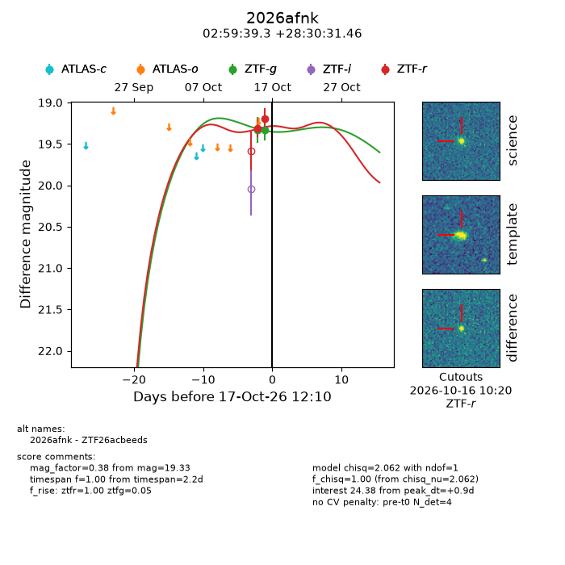
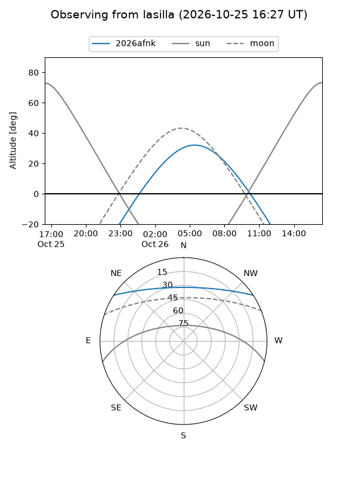
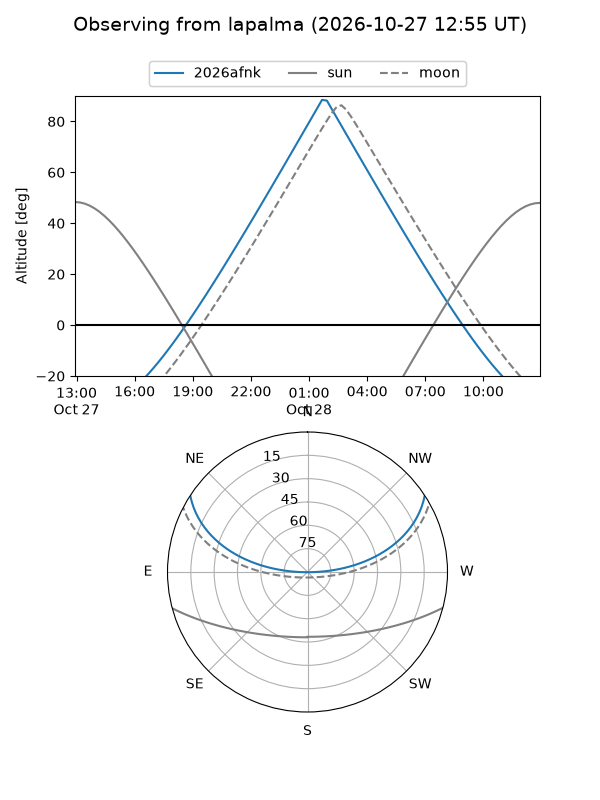
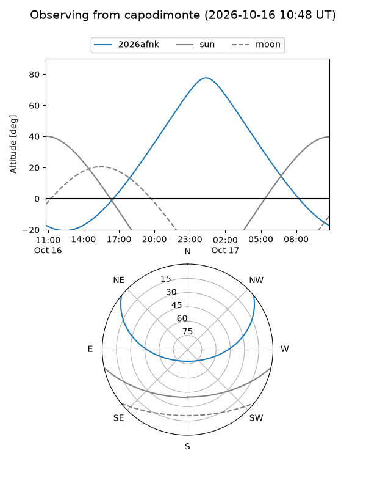
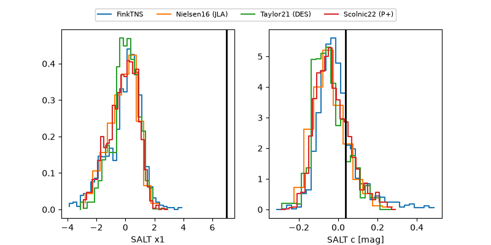

2026afnk
Target 2026afnk at 2026-10-17 12:11
Aliases and brokers:
FINK-ZTF: ztf.fink-portal.org/ZTF26acbeeds
Lasair-ZTF: lasair-ztf.lsst.ac.uk/objects/ZTF26acbeeds
ALeRCE-ZTF: alerce.online/object/ZTF26acbeeds
YSE-PZ: ziggy.ucolick.org/yse/transient_detail/2026afnk
TNS name: wis-tns.org/object/2026afnk
Direct TNS query: direct search
alt names
ZTF26acbeeds (ztf,fink_ztf)
2026afnk (tns,yse)
Coordinates:
equatorial (ra, dec) = 44.9137,+28.50874
equatorial (HMS+DMS) = 02:59:39.28,+28:30:31.46
galactic (l, b) = (154.3200,-26.43643)
Flags:
peak dt: +0.9
Photometry:
last ztfg=19.33, ztfr=19.19
2 ztfg, 2 ztfr detections
Lightcurve

Visibility



Additional plots
